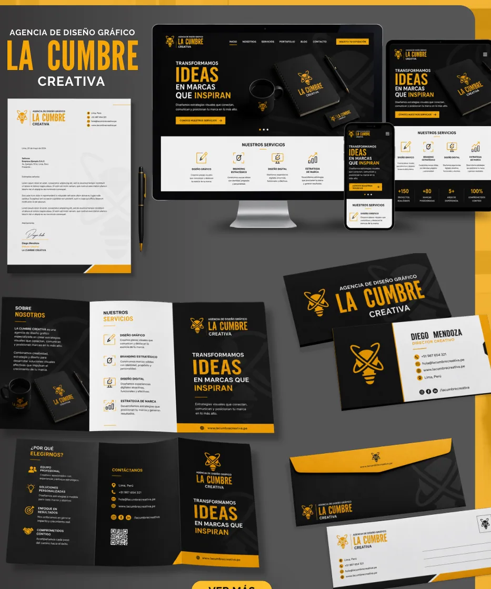

Branding e identidad
Logotipos, sistemas visuales, manuales de marca y aplicaciones corporativas.
Hola, soy Juan David Silvera
Soy diseñador gráfico publicitario. Transformo conceptos en identidades visuales memorables, piezas de comunicación estratégicas y experiencias que conectan con las personas.

Detrás de cada gran marca hay una buena idea esperando cobrar vida.
Diseñador gráfico publicitario con más de diez años de experiencia en comunicación visual y desarrollo de piezas gráficas. Creo propuestas atractivas, funcionales y estratégicas, con especial atención a la identidad de marca y a la claridad del mensaje.
Me caracterizo por el compromiso con la calidad, el trabajo en equipo, la adaptabilidad y la búsqueda constante de soluciones visuales que aporten valor.
Ideas, estrategia y ejecución gráfica para comunicar con claridad y personalidad.
Logotipos, sistemas visuales, manuales de marca y aplicaciones corporativas.
Campañas, piezas promocionales y soluciones de comunicación para marcas.
Revistas, catálogos, brochures y maquetación de publicaciones.
Empaques y presentaciones gráficas que transmiten valor de marca.
Experiencias digitales con diseño adaptable y enfoque comunicacional.
Preparación y desarrollo de piezas para soportes impresos y comerciales.
Una selección de identidad corporativa, diseño editorial, collage e infografía del portafolio original.
Todas las imágenes y fichas de proyecto proceden del portafolio PDF original.
Mi experiencia integra dirección creativa, identidad de marca, diseño editorial y comunicación publicitaria.
Diseñador gráfico publicitario y jefe de equipo de diseñadores. Campañas gráficas, branding, editorial, packaging y diseño web multimedia.
Formación técnica en Diseño Gráfico Publicitario.
Formación técnica en Diseño Gráfico Publicitario.
Convirtamos tu proyecto en una identidad visual que destaque y conecte con tu público.